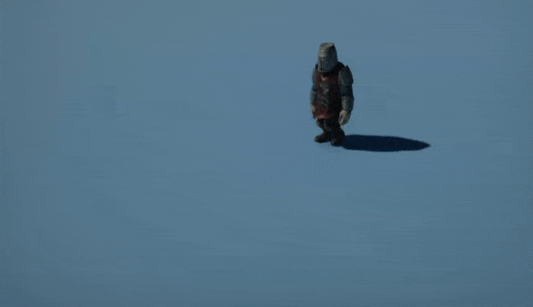
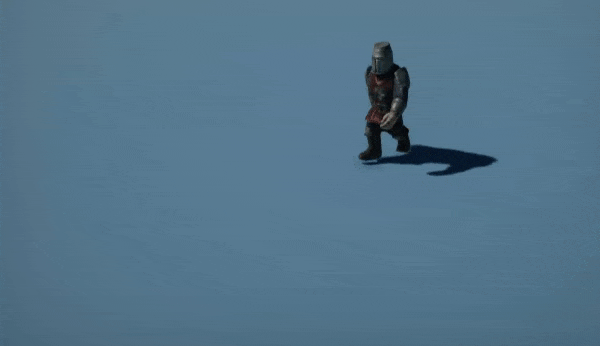
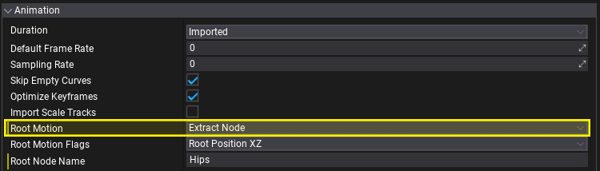
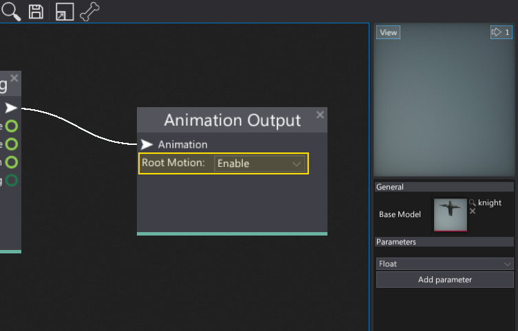

Root Motion
Root Motion is a special feature of the Flax animation system that can be used to extract the motion from the animated model root node and apply it to the actor. This is useful, for example, to create animation-driven characters. Flax supports extracting root motion from the custom node and motion blending so it's possible to achieve realistic looking results.
| No root motion | Root motion enabled |
|---|---|
|  |  |
Usage
In order to use root motion you need to:
Enable root motion when importing an animation (it can be extracted from a specific node or generated from whole skeleton pose movement)

Enable root motion extraction and apply in Anim Graph

Root Motion Mode
| Option | Description |
|---|---|
| None | Root Motion feature is disabled. |
| Extract Node | Motion is extracted from the root node (or node specified by name). |
| Extract Center Of Mass | Motion is extracted from the center of mass movement (estimated based on the skeleton pose animation). |
Root Motion Flags
Use Root Motion Flags to specify which components of the motion should be extracted from the animation onto the target.
| Flag | Description |
|---|---|
| None | No root motion. |
| Root Position XZ | Root node position along XZ plane. Applies horizontal movement. Good for stationary animations (eg. idle). |
| Root Position Y | Root node position along Y axis (up). Applies vertical movement. Good for all 'grounded' animations unless jumping is handled from code. |
| Root Rotation | Root node rotation. Applies orientation changes. Good for animations that have baked-in root rotation (eg. turn animations). |
| Root Position | Root node position. |
| Root Transform | Root node position and rotation. |
Tips
You can manually specify the root node for the motion extracting when importing the animation. Use Root Node Name field (more info here).
If your character uses Character Controller or kinematic rigidbody you may want to apply the root motion to it instead of to animated model. To do this simply assign the target object to AnimatedModel.RootMotionTarget.